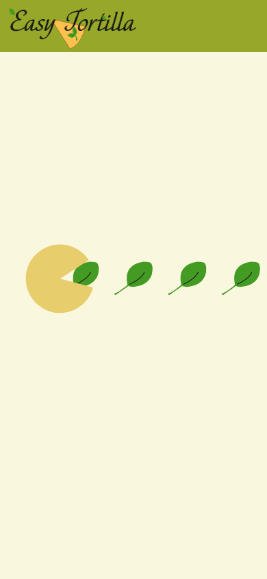
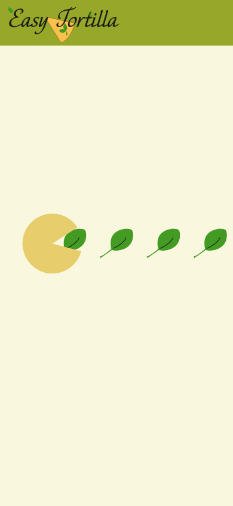

Opdracht
Bij dit eerste teamproject was HCI erg belangrijk. Dit was net het vak die we hadden gehad in het blok en deze moesten we toepassen in de opdracht.
In dit project werkten we in een team van 5 meiden. Het project heet ‘Heel Holland Kookt’. We kregen een kok toegewezen met een gerecht. Wij hadden Brit met het gerecht: Spaanse tortilla’s. Eerst moesten we een usertrip thuis doen. Hierbij moesten wij het gerecht zelf namaken. Verder moesten wij een app maken die de gebruiker kan gebruiken om door het gerecht heen te lopen. Wij hebben dit in Adobe XD gedaan. Hier hebben we alle schermen gemaakt en alle micro-interacties terug laten komen in de schermen, inclusief geluid. Onze app hebben we ook laten testen door testpersonen om feedback te krijgen. We hebben alles bijgehouden in een productbiografie.
Keuzes die wij hebben gemaakt zijn bijvoorbeeld dat je zelf de porties kan aangeven en dat de ingrediënten mee veranderen. Zo weet je gelijk hoeveel je nodig hebt. Verder hebben we als laadscherm PacMan gebruikt die blaadjes opeet om het speels en aantrekkelijk te maken. Ook hebben we een stier toegevoegd die de gebruiker vertelt wat die moet doen. Verder hebben we veel visuals gebruikt om het aantrekkelijk en begrijpelijk voor iedereen te maken. Als laatste hebben we een timer in de app toegevoegd, zodat je ondertussen ook nog andere dingen kunt doen en niet de hele tijd op de app hoeft te letten.
Ik heb geleerd hoe Adobe XD werkt en hoe je moet prototypen en dingen moet verbinden met elkaar. Verder heb ik ook geleerd om creatief te denken en zelf met ideeën te komen. Mijn cijfer was uiteindelijk een 8,7.
Concluderend, als je meer tijd hebt voor een project zou het er natuurlijk altijd nog beter uit kunnen zien, omdat je langer ermee bezig bent en meer iteraties kunt maken.
Link naar prototype: Prototype Heel Holland Kookt
 
